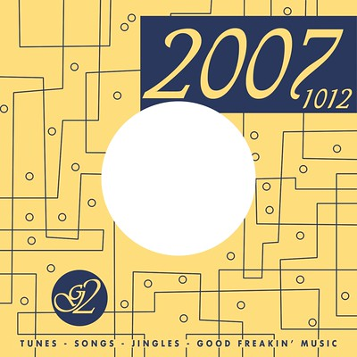
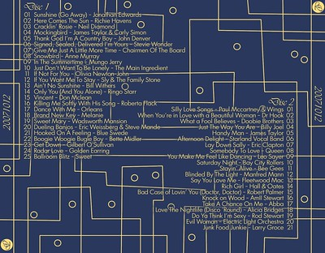

G2 20071012
]
The G2 collection has rolled onward. This time in honor of my anniversary with Maria. Although I started making this particular edition in attempt to meet up with Maria's birthday, I didn't make anywhere nearly in time. This one had a very specific set of music from which to pick and choose. In honor of Maria being a child of the 70's, and me being generally a fan of the 70's, I decided to make this collection entirely out of 70's music – specifically songs from the Billboard Top 100 charts. I made another CD in the G2 series. As usual, I provide the song list more for information rather than input. I'm not opposed to input, but it's not going to change anything (since I've already given it to her). I'll throw out the disclosure on this one that there are more songs on these 2 discs that I would never give to her in all seriousness. If you're saying to yourself, “Whoa... he confessed to giving her that song?” – that's almost 100% guaranteed on there in reference to an inside joke or something along those lines. I'll talk more about the artwork below the song lists.
For only the second time in the history of me making discs for Maria, this is a double disc set. There was just too much good music to choose from. Disc 1 has songs from 1970-1975 and Disc 2 from 1976-1979. As usual, all links lead to the iTunes Store, where you can listen to a 30 second clip of each song (except for a couple cases where either the song wasn't there, or that version wasn't, or whatever). I've also shown the year from which I got the song, as well as its position on the year-end chart.
Disc 1
| Track | Title | Artist | Length | Year-Position |
|---|---|---|---|---|
| 01 | Sunshine (Go Away) | Jonathan Edwards | 2:14 | 1972 - #37 |
| 02 | Here Comes The Sun | Richie Havens | 2:31 | 1971 - #95 |
| 03 | Cracklin' Rosie | Neil Diamond | 2:59 | 1970 - #17 |
| 04 | Mockingbird | James Taylor & Carly Simon | 4:09 | 1974 - #52 |
| 05 | Thank God I'm A Country Boy | John Denver | 3:08 | 1975 - #10 |
| 06 | Signed, Sealed, Delivered I'm Yours | Stevie Wonder | 2:37 | 1970 - #31 |
| 07 | Give Me Just A Little More Time | Chairmen Of The Board | 2:42 | 1970 - #39 |
| 08 | Snowbird | Anne Murray | 2:11 | 1970 - #42 |
| 09 | In The Summertime | Mungo Jerry | 3:30 | 1970 - #53 |
| 10 | Just Don't Want To Be Lonely | The Main Ingredient | 3:37 | 1974 - #36 |
| 11 | If Not For You | Olivia Newton-John | 2:52 | 1971 - #76 |
| 12 | If You Want Me To Stay | Sly & The Family Stone | 2:59 | 1973 - #43 |
| 13 | Ain't No Sunshine | Bill Withers | 2:05 | 1971 - #23 |
| 14 | Only You (And You Alone) | Ringo Starr | 3:21 | 1975 - #96 |
| 15 | Vincent | Don Mclean | 4:03 | 1972 - #94 |
| 16 | Killing Me Softly With His Song | Roberta Flack | 4:47 | 1973 - #3 |
| 17 | Dance With Me | Orleans | 3:02 | 1975 - #69 |
| 18 | Brand New Key | Melanie | 2:23 | 1972 - #9 |
| 19 | Sweet Mary | Wadsworth Mansion | 2:42 | 1971 - #96 |
| 20 | Dueling Banjos | Eric Weissberg & Steve Mande | 2:18 | 1973 - #61 |
| 21 | Hooked On A Feeling | Blue Swede | 2:52 | 1974 - #20 |
| 22 | Boogie Woogie Bugle Boy | Bette Midler | 2:19 | 1973 - #71 |
| 23 | Get Down | Gilbert O'Sullivan | 2:39 | 1973 - #66 |
| 24 | Radar Love | Golden Earring | 6:24 | 1974 - #64 |
| 25 | Ballroom Blitz | Sweet | 4:04 | 1975 - #16 |
| ## Disc 2 |
| Track | Title | Artist | Length | Year-Position |
|---|---|---|---|---|
| 01 | Silly Love Songs | Paul Mccartney & Wings | 5:53 | 1976 - #1 |
| 02 | When You're in Love with a Beautiful Woman | Dr Hook | 2:58 | 1979 - #13 |
| 03 | What a Fool Believes | Doobie Brothers | 3:11 | 1979 - #19 |
| 04 | Just The Way You Are | Billy Joel | 3:35 | 1978 - #17 |
| 05 | Handy Man | James Taylor | 3:17 | 1977 - #46 |
| 06 | Afternoon Delight | Starland Vocal Band | 3:13 | 1976 - #12 |
| 07 | Lay Down Sally | Eric Clapton | 3:30 | 1978 - #15 |
| 08 | Somebody To Love | Queen | 4:56 | 1977 - #88 |
| 09 | You Make Me Feel Like Dancing | Leo Sayer | 2:52 | 1977 - #13 |
| 10 | Saturday Night | Bay City Rollers | 2:54 | 1976 - #63 |
| 11 | Stayin' Alive | Bee Gees | 4:45 | 1978 - #4 |
| 12 | Blinded By The Light | Manfred Mann | 3:51 | 1977 - #36 |
| 13 | Say You Love Me | Fleetwood Mac | 4:13 | 1976 - #53 |
| 14 | Rich Girl | Hall & Oates | 2:26 | 1977 - #23 |
| 15 | Bad Case of Lovin' You (Doctor, Doctor) | Robert Palmer | 3:11 | 1979 - #92 |
| 16 | Knock on Wood | AmII Stewart | 3:44 | 1979 - #22 |
| 17 | Take A Chance On Me | Abba | 4:03 | 1978 - #32 |
| 18 | I Love The Nightlife (Disco 'Round) | Alicia Bridges | 3:09 | 1978 - #88 |
| 19 | Do Ya Think I'm Sexy | Rod Stewart | 5:27 | 1979 - #4 |
| 20 | Evil Woman | Electric Light Orchestra | 4:11 | 1976 - #69 |
| 21 | Junk Food Junkie | Larry Groce | 3:05 | 1976 - #93 |

So, up top is the artwork for the front of the ablum. This is the back artwork. I enjoyed making this one, though not as much as previous one. I was aiming for something a bit older looking/feeling to try to match the music. Overall though, I'm pleased with it. When I print it out I cut out the middle of the circle. Here are some additional geek details (though I admit this one isn't nearly as geeky as last time):
- The design was heavily inspired by this Sparton record envelope. Although I was originally tempted by this REO Records envelope, I didn't think the dancing people were quite right with the time period or style of music. What I ended up choosing is still older-feeling than the 70's, but I really liked it. I was tempted to do multi-colored lines and fill in the gaps, but I thought that might cheese it up a bit.
- All work for it done in Macromedia/Adobe Fireworks. What a great tool.
- The typeface used for the front G2 (and the script font in other places) is actually just a default PC typeface - Vivaldi. Shameful, I know, but it worked out nicely. I was tempted by a couple Adobe Typefaces, but their price deterred me. Oh well.
- The little typeface, on both the front cover, as well as the track listing on the back is another default typeface (at least on one of my installs) called LuzSans-Book.
Due to all of the songs being from Billboard Charts, here are some additional stats (for Disc1/Disc2/Both where applicable):
- Average position of the songs from their original placement in Billboard YEC (year end chart): 38/49/44
- Median position in those same charts: 23/43/38
- Year with most songs: 1976 (6)
- Average track length: 3:17/3:44/3:32
- Median track length: 2:59/3:30/3:15
- Tracks by The Beatles: 0 (for maybe only the second time in the history of these mixes)
Probably more info than anybody cared about, but that's just how it goes sometimes. Maybe you'll find a song or two in there that you enjoy.
- Prior: The World Upside Down
- Next: New forms of Interaction